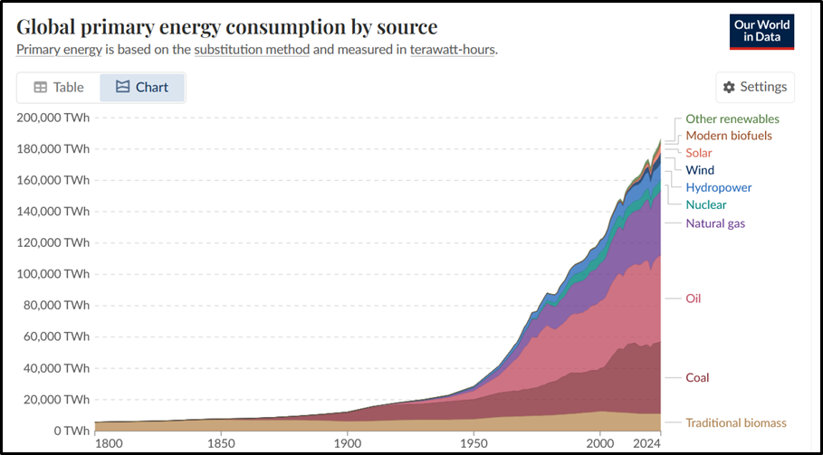

Following on from the initial article; ENVIRONMENT, attempting to live the Conscientious Life will have negative consequences to the current way of living i.e. jobs, livelihoods will be lost where we disengage from conspicuous consumption. The false FREEDOM we believe will be sacrificed; liberty will be restricted. As noted, we live in a finite world and eventually endless striving will meet its end.
These are not frivolous sacrifices & warrant serious conversations to plan accordingly and ensure everyone is brought along. However, the argument for the environment is too strong to deny/ignore anymore, the risk we are placing on the mainstays of life i.e. food & water is fundamentally wrong. We can see that the seeds of society’s destruction have been there from the outset, with the economic rise of capitalism, which its mainstay is to continually want ever more and more money. If the main focus is economic growth, then this is where infinite desire meets a finite world.

Figure 1. Global primary energy consumption by source
| Reference | Source Link |
|---|---|
| Table 1. Geneva Environment Network | genevaenvironmentnetwork.org |
The modern economy works on the basis of all our individual desires being fulfilled and then more are brought about to entice us, which propels this ship forward. Some of us who live in the Western world, have the highest living standards in history. We are forever informed of living standards needing to increase, why? If we have the basics and a life expectancy that now sees us living into our 80s, what more do we need? And this leads us back to the constant striving, which the modern economic model is built on. Once we have attained a desire we move on to the next.
Arthur Schopenhauer, 19th Century German philosopher, concluded that life is an infinite striving driven by an insatiable, blind, and irrational force he termed the "Will to Live". However, there is a debt to be paid for the success of actualising those desires and it is the environment that pays the heavy price from the materials, to the manufacturing, to the logistics and ultimately to its disposal. In this world where everything is becoming transactional, a means to an end, marketing works on our psychological state, to grasp our attention, to take us away from the NOW, to manipulate our fears, desires for the sake of us consuming more and more.
The Conscientious Life is at its essence, autonomous; independent, and having the power to make one’s own decisions. In this world where we are now living in an environmental emergency, the Kantian concept of autonomy is extremely apt; acting in accordance with one's moral duty rather than one's desires. The safeguarding of the environment is everyone’s responsibility. What we attain or are given, makes us not owners but rather trustees. And we should always leave the world in a better place than we found when the time comes to bestow the next generation of gatekeepers.
There is a beautiful world out there for all of us to gain from in every sense; physically, emotionally, spiritually. It’s very much a case of lifting the veil. A problem for those who see the degradation of the environment is that it is too much embroiled in the climate change/decarbonisation conversation, where some will rationalise that this is a problem for others i.e. States, corporations to resolve. While others are simply blasé to what is happening. That is not an option anymore.
The Environment and its health are paramount to the Conscientious Life. Articles in this pillar will focus on educating how important it is that we, as trustees, make it our duty to preserve its health. We will also discuss the philosophical implications of what our lifestyles have on the environment and ourselves.